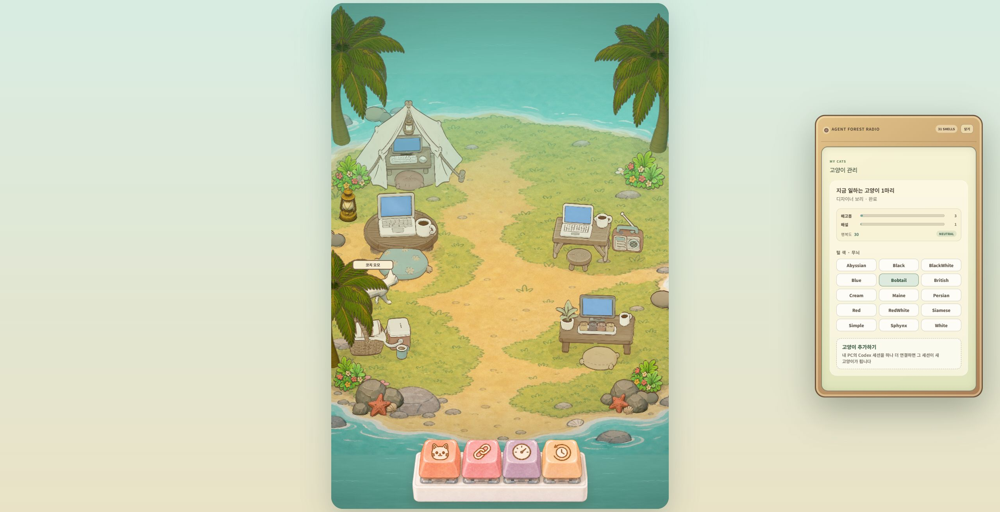
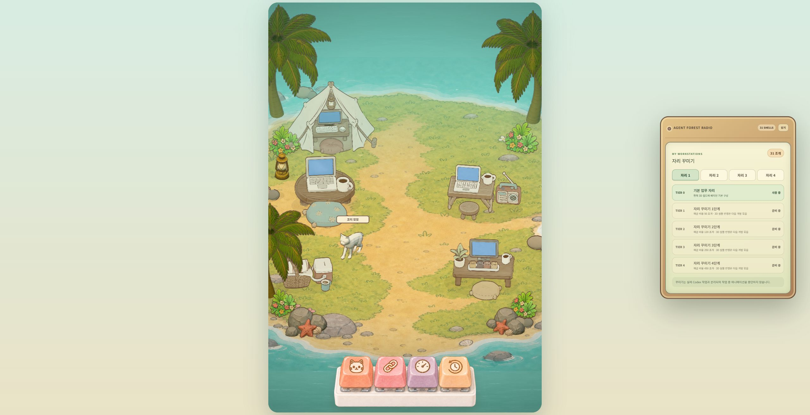
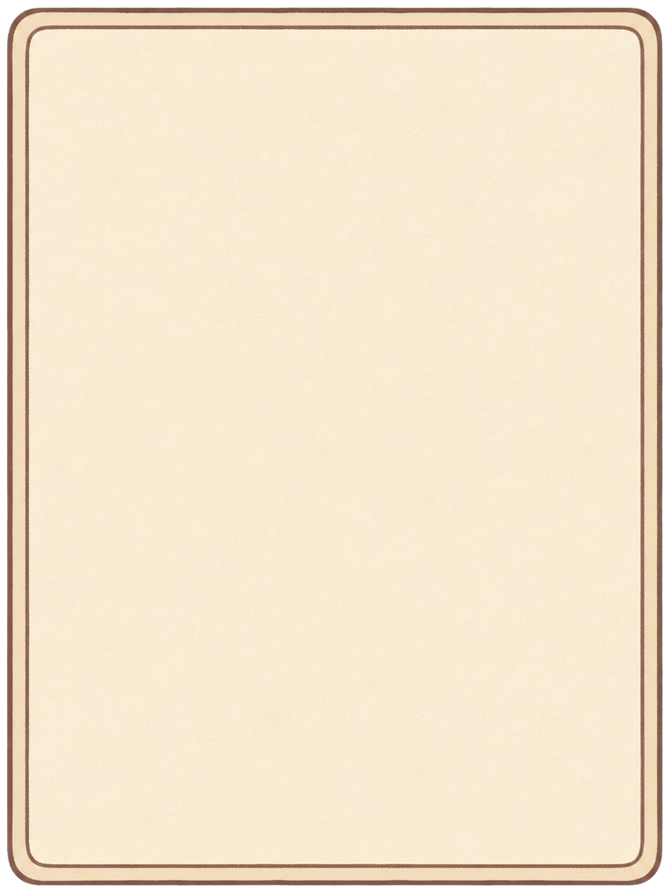
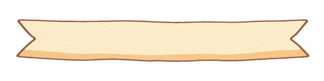
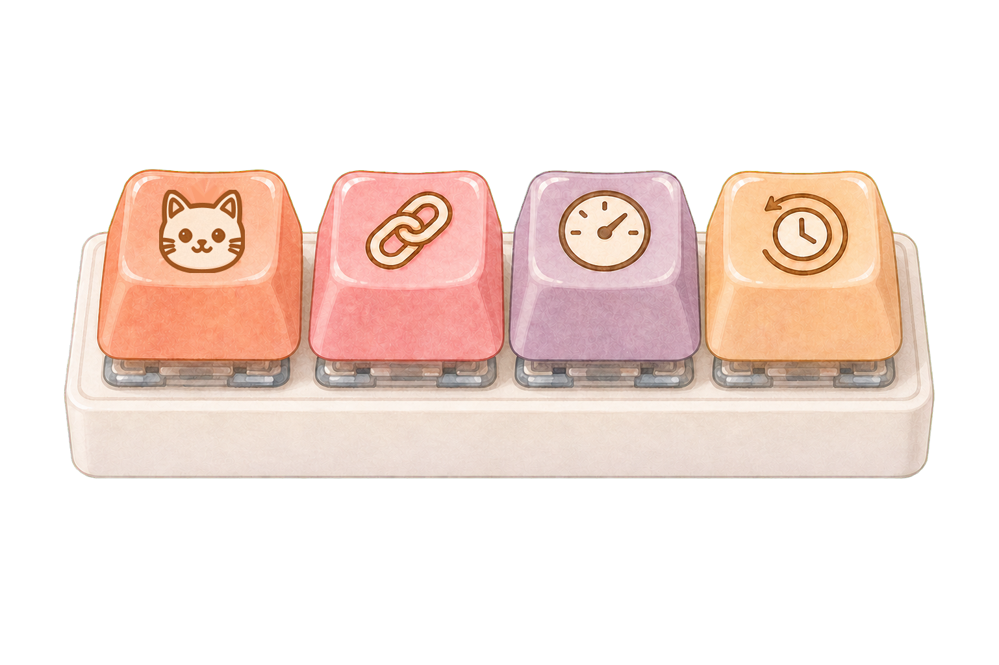
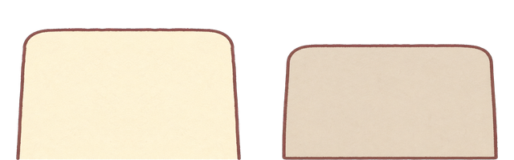
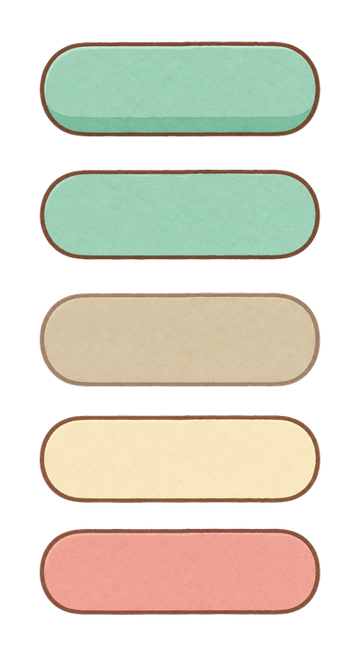
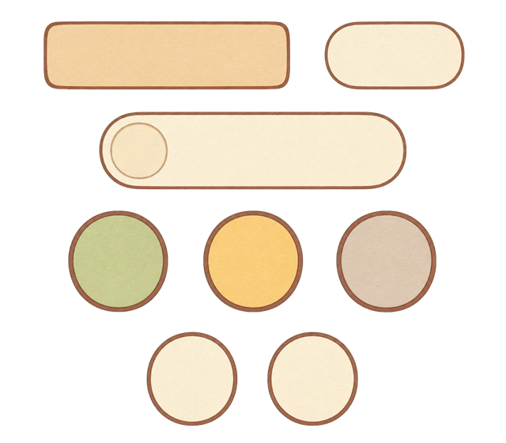

고양이 관리 · 현재
기획과 불일치
실측: 고양이 위 이름표에 욕구 정보 없음 · 팝업이 캔버스 밖으로
밀림 · 닫기는 작은 텍스트 버튼 · 내부 표면이 CSS 카드/버튼.
Agent Forest · UI implementation map · 2026-07-28
결론부터 말하면 현재 구현은 기획서 전체가 아니라 기능 뼈대인 Phase 1A입니다. 욕구 데이터는 만들어졌지만 3D 이름표에는 연결되지 않았고, 팝업은 캔버스 바깥의 CSS 패널이며, 이미지형 닫기·탭·리스트· 두 번째 키캡 아이콘은 아직 적용되지 않았습니다.
01 · Current state audit
2026-07-28 로컬 실행 화면을 직접 열어 고양이 관리와 자리 꾸미기 버튼을 눌러 확인했습니다. 아래 두 이미지는 설계 예시가 아니라 현재 코드의 실제 렌더입니다.


02 · Target composition
팝업은 월드 캔버스의 자식 오버레이로 들어갑니다. 사용자에게 보이는 프레임·버튼·탭·카드·게이지는 PNG이고, CSS는 좌표·크기·반응형·클릭만 담당합니다.


자리 꾸미기
03 · Four menu screens
모든 메뉴는 같은 이미지 프레임과 큰 닫기 버튼을 공유하되, 제목 리본·탭·카드 내용과 아이콘만 바뀝니다.
이름표 욕구와 상세 팝업의 값이 실시간으로 동일해야 합니다.
현재 체인 아이콘을 자리/책상 아이콘으로 교체합니다.
세션 상태와 작업 지시를 같은 이미지 카드 체계로 보여줍니다.
진행 중과 완료 기록을 이미지 탭으로 전환합니다.
04 · Image-first boundary
“CSS로 만든 느낌”을 없애려면 보이는 면의 책임을 PNG에 주고, 코드는 조립과 동작만 맡아야 합니다.
public/art/ui/popup-frame-v1.png
public/art/ui/popup-title-ribbon-v1.png

public/art/ui/tabs-v1.png

public/art/ui/cards-v1.png

public/art/ui/buttons-v1.png

public/art/ui/badges-v1.png
05 · Implementation matrix
이 표의 “미구현”은 화면에 아직 들어가지 않았다는 뜻입니다. 데이터나 HTML 구조만 존재하는 경우는 “일부”로 구분했습니다.
| 항목 | 현재 상태 | 목표 | 이미지 자산 | 연결 코드 |
|---|---|---|---|---|
| 욕구 데이터 | 완료 | 배고픔·배설·행복도 계산/저장 | 없음 | app/cat-needs.ts |
| 3D 이름표 욕구 | 미구현 | 고양이 이동 중 이름 아래 상시 표시 | need-gauge-*.png, happiness-badge-v1.png |
app/agent-world-3d.tsx · createAgentMarker() |
| 팝업 캔버스 내 배치 | 미구현 | 월드 스테이지 내부 absolute overlay | popup-frame-v1.png |
app/page.tsx · world-stage 내부 |
| 큰 이미지 닫기 | 미구현 | PC 52px / 모바일 48px, 기본·눌림 PNG | popup-close-v1.png, popup-close-pressed-v1.png |
app/page.tsx · radio-panel close |
| 고양이 팝업 욕구 | 일부 | 이미지 게이지와 이름표 수치 동기화 | need-gauge-*.png |
app/page.tsx · CAT panel |
| 2번 키캡 아이콘 | 미구현 | 체인 → 자리/책상 일러스트 | menu-keycaps-meta-base-v1.png + 눌림 4종 |
app/page.tsx · keycap-menu |
| 자리 탭 | CSS 기능만 | 기본·선택·눌림 이미지 탭 | tab-normal-v1.png, tab-active-v1.png |
app/page.tsx · desk-tabs |
| 자리 목록 | CSS 기능만 | 기본·선택·잠김 이미지 카드 | list-card-*.png |
app/page.tsx · desk-tier-list |
| 모바일 캔버스 팝업 | 미구현 | 한 화면 안에서 안전 여백 유지 | 동일 PNG 자산 재사용 | app/globals.css · container queries |
06 · Build order
먼저 이미지 규격을 확정하고, 그 다음 데이터를 3D와 팝업에 연결합니다. 각 단계는 PC·모바일 캡처 비교를 통과해야 다음 단계로 넘어갑니다.
기존 시트를 개별 자산으로 추출하고, 닫기·욕구·2번 키캡 부족분을 제작합니다.
public/art/ui/meta-v1/*.png
이름표 그룹에 욕구 이미지 플레인과 동적 채움 마스크를 붙입니다.
app/agent-world-3d.tsx
패널 DOM을 월드 스테이지 안으로 옮기고 캔버스 밖을 넘지 않게 제한합니다.
app/page.tsx
CSS 테두리·배경을 제거하고 PNG 프레임·탭·카드·버튼으로 교체합니다.
app/globals.css
자리 아이콘이 포함된 기본 이미지와 1~4번 개별 눌림 이미지를 연결합니다.
public/art/menu-keycaps-meta-*.png
이름표/팝업 수치, 클릭, 사운드, PC·모바일 화면을 실제 브라우저에서 검증합니다.
1440×900 · 390×844
07 · Visual acceptance
아래 항목을 모두 만족하고 실제 캡처 전·후 비교가 있을 때만 이번 UI 단계를 완료로 판정합니다.